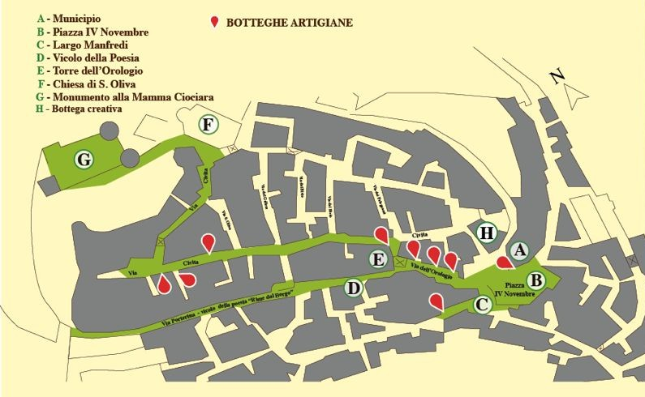

Nel cuore di una tradizione che attraversa i secoli nasce Nuovo come Antico, la bottega in cui Lucia lavora rame e ottone trasformandoli in piccoli racconti da indossare. Ogni pezzo nasce dal gesto lento dell’artigianato: il metallo viene tagliato, martellato, inciso e piegato fino a trovare la sua forma. Non esistono produzioni in serie, ma oggetti unici, costruiti uno alla volta, seguendo il ritmo della mano e della materia. Ma la storia di questi gioielli inizia molto prima della bottega. L’ispirazione viene dal territorio e dal suo vissuto. Non sono semplicemente oggetti osservati nei libri o nelle vetrine: sono reperti che lei stessa ha contribuito a riportare alla luce durante scavi archeologici. Lucia infatti lavora da 30 anni nel Museo Civico Archeologico di Castro dei Volsci e molti ornamenti prendono forma proprio osservando i monili conservati nel Museo: gioielli provenienti da tombe altomedievali e antichi ex voto di epoca romana e volsca, oggetti che raccontano la relazione tra corpo, identità e simbolo. Giorno dopo giorno ha osservato queste forme antiche ed oggi le reinterpreta in chiave contemporanea. I motivi geometrici, i segni incisi, le piccole imperfezioni del metallo diventano elementi di un linguaggio nuovo, capace di mantenere viva la memoria senza copiarla. Così nascono ornamenti personali e gioielli che portano con sé un doppio tempo: quello della terra da cui provengono le idee e quello presente della creazione artigianale. Indossare un oggetto di Nuovo come Antico significa portare con sé un frammento di storia trasformato in gesto quotidiano — un incontro tra memorie antiche, gesti simbolici, territorio e lavoro delle mani. Sarà un dialogo diretto con la storia
Le Botteghe della
Regina Camilla
Uno dei progetti centrali dell'associazione è quello di coordinare le botteghe della Regina Camilla. Un intreccio di maestranze e abilità manuali che raccontano la storia del nostro territorio.
Mappa delle Botteghe

Scopri le Botteghe
- Variazione_13 ↓
- Nuovo come Antico ↓
- Bontà Castresi ↓
- Mamma Ciociara ↓
- Arte Orafa ↓
- Espressioni d'Arte ↓
- Eco intrecci ↓
- La Tana del Tessitore ↓
- Trame Preziose ↓
- C'era una volta ↓
- Il Tornitore con i Baffi ↓
- Studio 28 ↓
- Il Volo sul Borgo ↓
Variazione_13
Gestita da Luisa Zomparelli
Luisa Zomparelli è un'artigiana che lavora e vive tra le stoffe. La sua formazione presso l'accademia di alta moda Koefia di Roma la porta a realizzare capi unici che guardano alla contemporaneità ma che prendono spunto dalla tradizione locale e non, come per esempio la borsa ispirata al concone. Per le sue creazioni usa tessuti acquistati nei negozi o nei mercatini ma, pensando alla sostenibilità, usa anche vecchie tovaglie, zip rotte scarti di altre lavorazioni che, tra le sue mani cambiano forma acquistando una nuova vita.
Nuovo come Antico
Gestita da Lucia Rossi
Bontà Castresi
Gestita da Clara Rossi e Germana Mantua
Bontà Castresi vi invita a scoprire l'eccellenza enogastronomica locale. Una selezione curata dei migliori prodotti tipici di Castro dei Volsci e della Ciociaria: olio extravergine d'oliva, salumi artigianali, formaggi freschi e stagionati, e i dolci della tradizione, pronti per essere gustati o portati a casa come un prezioso ricordo del borgo.
Dal 1991 Maria porta avanti con passione il suo negozio di calzature e abbigliamento. Imprenditrice esperta e lungimirante, dopo tanti anni di attività ha scelto di mettersi nuovamente in gioco, puntando sull’unicità e sull’identità del territorio per dare vita a un progetto autentico e distintivo. La sua visione nasce dall’incontro tra tradizione e innovazione: ogni creazione racconta una storia, riflette la cultura del luogo e custodisce un valore profondo e riconoscibile. Con grande attenzione ai materiali, alla qualità e al design, Maria trasforma l’eredità della sua terra in accessori e capi eleganti, originali e capaci di distinguersi per raffinatezza e personalità. Da questa idea prende forma un accessorio unico: un ombrello che celebra la Ciociaria e rende omaggio alle sue radici. I simboli scelti sono fortemente identitari e carichi di significato: il monumento della Mamma Ciociara, il concone e le antiche calzature, le ciocie, emblemi della storia e della cultura locale. Nasce così il brand “La Mamma Ciociara”, che rappresenta anche il nome dell’associazione attualmente in fase di completamento: un progetto che va oltre il prodotto, con l’obiettivo di valorizzare e promuovere il territorio. Prima di avviare la realizzazione, il marchio è stato regolarmente registrato presso la CCIAA di Frosinone, tramite il Ministero dello Sviluppo Economico, seguendo tutti i passaggi previsti e nel rispetto dei tempi tecnici di verifica. Il progetto ha una visione chiara e ambiziosa: da un lato proporre il prodotto al pubblico privato, dall’altro coinvolgere attivamente tutti i 91 comuni della Ciociaria, offrendo loro un simbolo concreto e rappresentativo dell’identità locale. Questo ombrello non è solo un accessorio, ma un racconto da portare con sé: un segno distintivo che unisce storia, cultura ed eleganza.
Artigiano Orafo
Gestita da Augusto Tilli
Augusto Tilli lavora il metallo come si lavorano le storie: con pazienza, memoria e rispetto. Nella sua bottega di orafo, tra strumenti antichi e gesti tramandati nel tempo, il suo lavoro prende forma giorno dopo giorno, trasformando i metalli preziosi in piccoli racconti da indossare. La sua attività nasce da una ricerca profonda nella tradizione della Ciociaria. I gioielli che Augusto ricostruisce non sono semplici oggetti decorativi: sono frammenti di storia popolare. Collane, orecchini, spille e pendenti che un tempo facevano parte della vita quotidiana delle donne ciociare, accompagnandole nei momenti più importanti della loro esistenza. Per molte di loro, quei gioielli rappresentavano molto più di un ornamento. In una società fortemente maschilista, le opportunità di autonomia femminile erano limitate. I grandi orecchini in oro e le collane di corallo per questo diventavano una forma di ostentazione e di riscatto. La forma di questi orecchini non è casuale. Nella cultura tradizionale simboleggiava la fertilità femminile e la capacità della donna di dare vita e continuità alla famiglia. Indossarli significava celebrare il ruolo generativo della donna, custode della discendenza e della continuità della casa. Erano un patrimonio personale, spesso l’unico. Erano un valore da custodire, da tramandare, da vendere o impegnare nei momenti di difficoltà. È da questa consapevolezza che prende forma il lavoro di Augusto Tilli. Ogni gioiello viene ricostruito attraverso tecniche artigianali tradizionali, studiando forme, simboli e lavorazioni del passato. Il risultato non è una semplice riproduzione, ma una nuova vita per oggetti che portano con sé il peso e la dignità delle storie che rappresentano. Nella bottega della Regina Camilla di Augusto, l’oreficeria diventa un atto di memoria. Ogni pezzo racconta la forza silenziosa delle nostre nonne, il loro modo di affermare sé elles in un mondo che spesso le voleva ai margini. Indossare questi gioielli significa portare con sé non solo una tradizione, ma anche il segno di una storia di identità, coraggio e riscatto.
Espressioni d'Arte
Gestita da Rita Lucia Rosati
Imprenditrice con profitto nella vita di ogni giorno e artista sensibile nel tempo del cuore, Rita Lucia Rosati incarna l’unione perfetta tra determinazione e creatività. Senza mai abbandonare il suo spirito pragmatico, ha scelto di dedicare la sua passione più profonda all’acquerello, arricchendo con il suo talento il circuito delle Botteghe della Regina Camilla. Il suo è un percorso di armonia, dove la gestione d'impresa e la delicatezza del pennello si alimentano a vicenda. Nei suoi acquerelli, Rita trasferisce la precisione dell'imprenditrice, filtrata però da una sensibilità nuova che predilige la luce, le sfumature e la fluidità dell'acqua. Il suo tempo libero non è una pausa, ma una ricerca instancabile di bellezza. Nelle Botteghe della Regina, le sue opere si distinguono per un’eleganza colta e vibrante. Le sue tavole raccontano la complessità del lavoro di ricerca ed allo stesso tempo mostrano come sia facile incantarsi davanti al modo in cui un pigmento si scioglie su un foglio. Per Rita, l’acquerello è lo spazio della libertà e della rigenerazione. Ogni sua opera è il frutto di uno sguardo capace di vedere oltre l'ordinario, trasformando la passione in un’eccellenza artigiana riconosciuta e ammirata.
L'Arte Rigenerata
Gestita da Giuseppe Marazzi
Ex professionista oggi dedito al riciclo creativo, Peppe è un maestro dell'economia circolare e la sua abilità lo ha portato ne circuito delle Botteghe della Regina Camilla. Le suas mani trasformano carta di recupero, giornali e riviste in manufatti di altissimo pregio: cesti intrecciati che richiamano la tradizione, gioielli eco-sostenibili dall'estetica ricercata e fiori che non appassiscono mai. Ogni sua opera è un pezzo unico che nobilita lo scarto, elevandolo a oggetto d'arte e dimostra che il lusso può (e deve) essere gentile con il pianeta. Coniugando il rigore della sua precedente carriera con una profonda sensibilità ambientale, Peppe dimostra che la sostenibilità può essere una forma di alto artigianato, portando un messaggio di rinascita e bellezza in ogni sua creazione. Far parte delle Botteghe della Regina Camilla significa, per Peppe, portare avanti un messaggio chiaro: il recupero è un'arte nobile. Ogni sua creazione è un pezzo unico che racconta una storia di rinascita, rigore professionale e amore incondizionato per l'ambiente. Per Peppe, ogni foglio recuperato è una promessa mantenuta verso l'ambiente. Il suo non è solo un hobby, ma un invito silenzioso a guardare oltre l'apparenza: dove gli altri vedono un rifiuto, lui vede un fiore che deve ancora sbocciare.
La Tana del Tessitore
Gestita da Paolo De Lellis
All'inizio degli anni 90 ho visto per la prima volta un telaio antico. Lo strumento faceva parte di una raccolta di oggetti antichi e mia nonna mi spiegò che era un telaio e che fino agli anni 50 del secolo scorso i tessuti, soprattutto quelli destinati al corredo, erano realizzati in casa. Negli anni successivi ho continuato a studiare il telaio cercando di capire come funzionasse ma soprattutto ammiravo i manufatti che ancora qualcuno conservava gelosamente. Le mie zie intanto mi avevano raccontato del processo di lavorazione del lino e della canapa che sono state coltivate nella mia zona fino agli anni 40. Mi avevano insegnato anche a filare la lana sia a mano con la rocca e il fuso e sia con il filatoio a pedale. Finalmente qualche anno fa su internet trovo dei video documentari sulla tessitura tradizionale. In questi video veniva mostrato il lungo processo di preparazione del telaio, l'orditura. Immediatamente ho realizzato da me un rudimentale telaio e ho iniziato i primi esperimenti di tessitura. Ho fatto quindi la mia prima produzione di manufatti soprattutto centrotavola e tovagliette. Quattro anni fa l'associazione "La Scarana" presso Castro dei Volsci, cercava un tessitore per rimettere in funzione un telaio antico originale della metà del XVII secolo. Con l'associazione ho aperto la mia bottega "La tana del tessitore" che si trova nel centro storico del paese e fa parte del progetto "Le botteghe della regina Camilla". In bottega oltre a produrre i miei manufatti faccio dimostrazioni pratiche, corsi per adulti, laboratori didattici per le scuole e workshop per turisti interessati. Cerco di sfruttare tutte le possibili trasformazione del tessuto e quindi creo runner, centrotavola, tovagliette all'americana, tappeti, cuscini, borse, e asciugamani. Tutti i manufatti possono essere arricchiti da disegni che vengono realizzati durante la lavorazione.
Trame Preziose... di Luce e Filo
Gestita da Maria Rosaria Rossomando
Ex fotografa professionista, oggi traduce la sua sensibilità visiva nell’arte dell’uncinetto, del lavoro a maglia e del ricamo, portando la sua maestria all’interno del circuito delle Botteghe della Regina Camilla. Se un tempo Maria Rosaria catturava frammenti di realtà attraverso la luce, oggi li costruisce punto dopo punto, intrecciando filati pregiati per dare vita a creazioni che sono veri e propri racconti tattili:
• L’Uncinetto e la Maglia: Capi e accessori dove la tecnica impeccabile incontra un gusto estetico raffinato, frutto di decenni di educazione all'immagine.
• Il Ricamo narrativo: Ogni punto è un segno grafico, un dettaglio che impreziosisce il tessuto e trasforma un manufatto in un’opera unica.
• Intrecciare Storie: Per Maria Rosaria, il filo non è solo materia, ma un legame tra passato e presente, un modo per "scrivere" storie di eleganza e dedizione.
Nelle Botteghe della Regina, Maria Rosaria rappresenta l'eccellenza di un artigianato che non si limita a produrre, ma custodisce la memoria. Ogni sua creazione è un invito a rallentare e ad ammirare la perfezione di un dettaglio fatto a mano, con la stessa cura con cui si compone l'inquadratura perfetta.
C'era una volta
Gestita da Tiziana Germani
Nelle Botteghe della Regina Camilla ogni porta che si apre racconta una storia. La mia profuma di forno caldo, zucchero e ricordi di famiglia. Mi chiamo Tiziana e per molti anni ho lavorato nel mondo della ristorazione. Poi ho sentito il desiderio di tornare all’essenza delle cose semplici: le ricette dei dolci tradizionali, quelle che si tramandano a voce, da una generazione all’altra. Così sono arrivata qui, in bottega, dove ogni giorno preparo torte e biscotti seguendo i gesti e i sapori della traditione. Mi piace definirmi un’artigiana del gusto. Non preparo solo dolci: preparo piccoli pezzi di memoria, che raccontano la nostra terra e il nostro modo di vivere. La domenica è il momento che amo di più. La mia bottega si riempie di visitatori curiosi, viaggiatori di passaggio, famiglie e amici. Io li accolgo con un sorriso, con il profumo dei biscotti appena sfornati e con tante storie da raccontare. Ogni dolce ha la sua: una ricetta custodita, un ingrediente semplice, un gesto antico. Durante le degustazioni accompagno gli ospiti in un piccolo viaggio nel tempo, nelle cucine delle nostre bisnonne. Erano anni difficili, soprattutto nel dopoguerra, quando gli ingredienti erano pochi e preziosi. Eppure, grazie alla condivisione e alla solidarietà tra vicini, si riusciva ad accendere i forni a legna e a sfornare ciambelle e biscotti che riempivano le case di profumi indimenticabili. Erano dolci semplici, ma avevano il sapore della casa, della resistenza, del sacrificio e dell’amore per la famiglia. Per me far parte delle Botteghe della Regina Camilla significa proprio questo: custodire una tradizione e farla vivere ancora oggi. Raccontarla a chi arriva da lontano, condividerla con chi è curioso di scoprire non solo un dolce, ma la storia che lo accompagna. Perché a volte basta un biscotto, appena sfornato, per capire davvero il cuore di un luogo. Non è un caso se la mia bottega l’ho chiamata “C’era una volta”.
Il Tornitore Con i Baffi
Gestita da Daniele Pagliaroli
La bottega è gestita da Daniele, un artigiano specializzato nella realizzazione di oggetti in legno. Con un background consolidato nel settore, Daniele si dedica alla creazione di pezzi unici e di alta qualità, combinando tradizione e innovazione.
Studio 28
Gestita da Angelo Penna
Fabbro per mestiere e artista per vocazione, Angelo è l'uomo che sussurra al ferro. La sua vita è nata e trascorsa tra incudine e martello, ma è nella dimensione creativa delle Botteghe della Regina Camilla che la sua abilità tecnica trova lo spazio per trasformarsi in poesia industriale. Angelo non si limita a lavorare il metallo: lo rigenera, sottraendolo all'oblio della discarica per donargli una nuova, nobile esistenza. Il suo è un lavoro di forza e visione. Con la maestria di chi conosce ogni segreto del calore, Angelo fonde scarti ferrosi e metalli abbandonati, trasformando pesanti residui in sculture leggere e dinamiche. Bulloni, vecchie lamiere e frammenti metallici destinati allo smaltimento diventano nelle sue mani forme organiche e simboliche di una modernità che sa guardare al passato. Le sue opere portano i segni della fiamma e del tempo, fondendo la robustezza del materiale con la delicatezza di un’ispirazione che nasce dal profondo. Nelle Botteghe della Regina, Angelo rappresenta l’anima ancestrale del gruppo: l'artigiano che doma la materia più dura per dimostrare che nulla va perduto. Ogni suo pezzo è un inno alla resilienza, dove il metallo "stanco" ritrova dignità e splendore attraverso un gesto artistico potente e consapevole.
Il Volo sul Borgo
Gestito da Silvio Carnevali
"Il Volo sul Borgo" offre una delle viste più suggestive e mozzafiato su Castro dei Volsci, "il Balcone della Ciociaria". Da questo punto privilegiato, lo sguardo spazia sui tetti in pietra del centro storico e si perde nella vallata sottostante, offrendo uno spettacolo unico in ogni stagione. È il luogo ideale per ammirare la struttura medievale del paese dall'alto e catturare scatti fotografici indimenticabili.